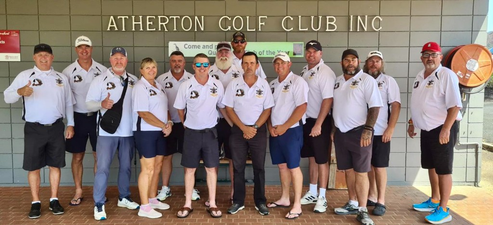

ABOUT US
Who we are, what we stand for, and why we do it.
Who we are, what we stand for, and why we do it.

NQ Defence Veterans Golf Club Inc. is a not-for-profit organisation based in Townsville, North Queensland. We provide a social and sporting outlet for veterans of the Australian Defence Force and their families.
Our club fosters camaraderie, promotes physical and mental wellbeing, and creates a relaxed environment where veterans can connect with others who understand the unique experiences of military service.
Whether you're a seasoned golfer or picking up a club for the first time, you're welcome here. All skill levels — it's about mateship, not handicaps.
Connection, community, and looking after each other — on and off the course.
Social and competition rounds at courses throughout Townsville and the region. All formats, all abilities — just turn up and play.
Annual championships, Anzac Day commemorative rounds, charity days, and inter-club competitions throughout the year.
A community that understands. We create a supportive environment and connect members with veteran support services when needed.
BBQs, social gatherings, family days, and celebrations. The best communities extend beyond the clubhouse.
Golf trips to courses across Queensland and beyond. Great golf, great company, and memories that last.
Whether you're a low-marker or a first-timer — if you're a defence veteran, you belong here.
Genuine connections between veterans. The bonds formed through service are strengthened on the golf course and beyond.
All skill levels, all branches, all ages. Whether you're scratch or a beginner, you're welcome here.
Golf provides exercise, social connection, and a therapeutic outdoor environment for veteran health.
Proudly Townsville. We support our local community through events, partnerships, and engagement.
We honour the service and sacrifice of all defence veterans with integrity and discipline.
At the end of the day, it's about enjoying a round with great people. We don't take ourselves too seriously.